Abstract
Vecto is a simplified interface to the powerful CL-VECTORS vector rasterization library. It presents a function-oriented interface similar to CL-PDF, but the results can be saved to a PNG instead of a PDF file. Since Vecto and all supporting libraries are written completely in Common Lisp, without depending on external non-Lisp libraries, it should work in any Common Lisp environment. Vecto is available under a BSD-like license. The current version is 1.0.2, released on October 1st, 2007.
Vecto is used by Easystreet.
The canonical location for Vecto is http://www.xach.com/lisp/vecto/.
Download shortcut:
Vecto is a library that provides a simple interface to the the CL-VECTORS vector drawing library. It supports drawing on a canvas and saving the results to a PNG file.
Vecto depends on the following libraries:
The easiest way to install Vecto and all its dependencies is with ASDF-Install.
Vecto's function interface is similar to the PDF vector description and painting interface: you create images by describing vector paths, then using stroke or fill operations to paint to the canvas.
Vecto's color system uses red, green, blue, and alpha color components for drawing. The results can be be saved to a PNG with an alpha channel.
Vecto's coordinate system starts at the lower-left corner of the image, and increases rightwards along the X axis and upwards along the Y axis.
All measurements are in pixels.
PDF is a feature-rich system. Vecto supports a small subset of PDF-style operations. In particular, it does not support:
Other limitations:
Related libraries:
All examples are available in doc/examples.lisp in the Vecto distribution. That file starts with:
(defpackage #:vecto-examples (:use #:cl #:vecto)) (in-package #:vecto-examples)
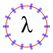(defun radiant-lambda (file)
(with-canvas (:width 90 :height 90)
(let ((font (get-font "times.ttf"))
(step (/ pi 7)))
(set-font font 40)
(translate 45 45)
(draw-centered-string 0 -10 #(#x3BB))
(set-rgb-stroke 1 0 0)
(centered-circle-path 0 0 35)
(stroke)
(set-rgba-stroke 0 0 1.0 0.5)
(set-line-width 4)
(dotimes (i 14)
(with-graphics-state
(rotate (* i step))
(move-to 30 0)
(line-to 40 0)
(stroke)))
(save-png file))))
(defun feedlike-icon (file) (with-canvas (:width 100 :height 100) (set-rgb-fill 1.0 0.65 0.3) (rounded-rectangle 0 0 100 100 10 10) (fill-path) (set-rgb-fill 1.0 1.0 1.0) (centered-circle-path 20 20 10) (fill-path) (flet ((quarter-circle (x y radius) (let ((kappa (* +kappa+ radius))) (move-to (+ x radius) y) (curve-to (+ x radius) (+ y kappa) (+ x kappa) (+ y radius) x (+ y radius))))) (set-rgb-stroke 1.0 1.0 1.0) (set-line-width 15) (quarter-circle 20 20 30) (stroke) (quarter-circle 20 20 60) (stroke)) (save-png file)))
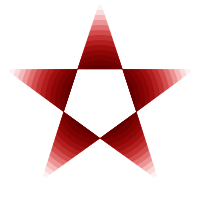(defun star-clipping (file) (with-canvas (:width 200 :height 200) (let ((size 100) (angle 0) (step (* 2 (/ (* pi 2) 5)))) (translate size size) (move-to 0 size) (dotimes (i 5) (setf angle (+ angle step)) (line-to (* (sin angle) size) (* (cos angle) size))) (even-odd-clip-path) (end-path-no-op) (flet ((circle (distance) (set-rgba-fill distance 0 0 (- 1.0 distance)) (centered-circle-path 0 0 (* size distance)) (fill-path))) (loop for i downfrom 1.0 by 0.05 repeat 20 do (circle i))) (save-png file))))
The following symbols are exported from the VECTO package.
Canvases
[Macro]
with-canvas (&key width height)
&body body
Evaluates body with a canvas established with the specified dimensions as the target for drawing commands. The canvas is initially completely clear (all pixels have 0 alpha).
[Function]
clear-canvas => |
Completely fills the canvas with the current fill color. Any marks on the canvas are cleared.
[Function]
save-png file => truename
Writes the contents of the canvas as the PNG file, and returns the truename of file.
[Function]
save-png-stream stream => |
Writes the contents of the canvas as a PNG to stream, which must accept (unsigned-byte 8) data.
The graphics state stores several parameters used for graphic operations.
[Macro]
with-graphics-state &body body
Evaluates the forms of body with a copy of the current graphics state. Any modifications to the state are undone at the end of the form.
[Functions]
set-rgba-fill r g b alpha => |
set-rgb-fill r g b => |
Sets the fill color. r, g, b, and alpha should be in the range of 0.0 to 1.0.set-rgb-fill is the same as set-rgba-fill with an implicit alpha value of 1.0.
The fill color is used for CLEAR-CANVAS, FILL-PATH, EVEN-ODD-FILL, FILL-AND-STROKE, EVEN-ODD-FILL-AND-STROKE, and DRAW-STRING.
[Functions]
set-rgba-stroke r g b alpha => |
set-rgb-stroke r g b => |
Sets the stroke color. r, g, b, and alpha should be in the range of 0.0 to 1.0.set-rgb-stroke is the same as set-rgba-stroke with an implicit alpha value of 1.0.
The stroke color is used for STROKE, FILL-AND-STROKE, and EVEN-ODD-FILL-AND-STROKE.
[Function]
set-line-cap style => |
Sets the line cap style to style, which must be one of :BUTT, :SQUARE, or :ROUND. The initial value is :BUTT.
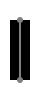 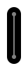 :BUTT :SQUARE :ROUND
[Function]
set-line-join style => |
Sets the line join style to style, which must be one of :MITER, :BEVEL, or :ROUND. The initial value is :MITER.
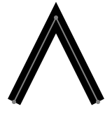 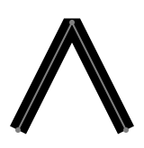 :MITER :BEVEL :ROUND
[Function]
set-line-width width => |
Sets the line width for strokes to width.
[Function]
set-dash-pattern dash-vector phase => |
Sets the dash pattern according to dash-vector and phase.dash-vector should be a vector of numbers denoting on and off patterns for a stroke. An empty dash-vector is the same as having no dash pattern at all.
phase is how far along the dash pattern to proceed before applying the pattern to the current stroke.
Appearance Dash Vector and Phase #() 0 #(30 30) 0 #(30 30) 15 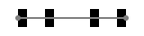 #(10 20 10 40) 0 #(10 20 10 40) 13 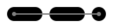 #(30 30) 0, :ROUND line caps
[Function]
translate x y => |
Offsets the coordinate system by x units horizontally and y units vertically.
[Function]
rotate radians => |
Rotates the coordinate system by radians.
[Function]
scale sx sy => |
Scales the coordinate system by sx horizontally and sy vertically.
[Function]
skew ax ay => |
Skews the X axis of the coordinate system by ax radians and the Y axis by ay radians.
[Function]
clip-path => |
Defines a clipping path based on the current path. It is not applied immediately, but is created after after the painting is done in the next call to one of FILL-PATH, EVEN-ODD-FILL, FILL-AND-STROKE, EVEN-ODD-FILL-AND-STROKE, or END-PATH-NO-OP.The clipping path initially covers the entire canvas; no clipping is done. Subsequent calls to CLIP-PATH set the clipping path to the intersection of the established clipping path and the new clipping path, and all drawing will be done within the outline of the clipping path.
The outline of the clipping path is defined with the nonzero winding rule, as with FILL-PATH.
There is no way to enlarge the clipping path. However, the clipping path is part of the graphics state, so changes may be localized by using WITH-GRAPHICS-STATE.
A filled red rectangle, not clipped 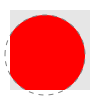 The same rectangle drawn with a circle clipping path in effect 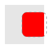 Clipped to a rounded rectangle clipping path 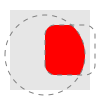 Clipped to the intersection of the circle and rounded rectangle clipping paths
[Function]
even-odd-clip-path => |
Like CLIP-PATH, but uses the even/odd fill rule to determine the outline of the clipping path.
Paths are used to create lines for stroking or outlines for filling. Paths consist of straight lines and curves. Paths consist of one or more subpaths.
[Function]
move-to x y => |
Starts a new subpath at (x,y). move-to must be the first step of constructing a subpath.
[Function]
line-to x y => |
Appends a straight line ending at (x,y) to the current subpath.
[Function]
curve-to
cx1 cy1
cx2 cy2
x y => |
Appends a cubic Bézier curve ending at (x,y) and with control points (cx1,cy1) and (cx2,cy2) to the current subpath.
[Function]
quadratic-to
cx cy
x y => |
Appends a quadratic Bézier curve ending at (x,y) and with the control point (cx,cy) to the current subpath.
[Function]
close-subpath => |
Closes the current subpath. If the current point is not the same as the starting point for the subpath, appends a straight line from the current point to the starting point of the current subpath.Subpaths with start and end points that coincidentally overlap are not the same as closed subpaths. The distinction is important when stroking:
Open subpath Closed subpath If the subpath is not closed, the start and points of the subpath will be drawn with the current line cap style. If the path is closed, the start and endpoints will be treated as joined and drawn with the line join style.
[Function]
rectangle x y width height
Creates a rectangular subpath with the given width and height that has its lower-left corner at (x,y). It is effectively the same as:(move-to x y) (line-to (+ x width) y) (line-to (+ x width) (+ y height)) (line-to x (+ y height)) (close-subpath)
[Function]
centered-ellipse-path
x y
rx ry
Adds a closed subpath that outlines an ellipse centered at (x,y) with an X radius of rx and a Y radius of ry.
[Function]
centered-circle-path x y radius => |
Adds a closed subpath that outlines a circle centered at (x,y) with a radius of radius. It is effectively the same as:(centered-ellipse-path x y radius radius)
After a path is defined, filling, stroking, or both will use the path to apply color to the canvas. After a path has been filled or stroked, it is no longer active; it effectively disappears.
[Function]
fill-path => |
Fills the current path with the fill color. If the path has not been explicitly closed with CLOSE-SUBPATH, it is implicitly closed before filling. The non-zero winding rule is used to determine what areas are considered inside the path.
[Function]
even-odd-fill => |
The same as FILL-PATH, but uses the even/odd rule to determine what areas are considered inside the path.
[Function]
stroke => |
Strokes the current path. The line width, stroke color, line join style, line cap style, and dash pattern and phase determine how the stroked path will appear on the canvas.
[Function]
fill-and-stroke => |
Fills the current path, then strokes it.
[Function]
even-odd-fill-and-stroke => |
Fills the current path using the even/odd rule, then strokes it.
[Function]
end-path-no-op => |
Ends the current path without painting anything. If a clipping path has been specified with CLIP-PATH or EVEN-ODD-CLIP-PATH, it will be created by end-path-no-op.
Vecto can draw text to a canvas. It loads glyph shapes from TrueType font files with ZPB-TTF.
[Function]
get-font font-file => font-loader
Creates and returns a ZPB-TTF font loader object from font-file. Any font loader created this way will automatically be closed at the end of its enclosing WITH-CANVAS form.
[Function]
set-font font-loader size => |
Sets the active font to the font associated with font-loader, scaled to size units per line.The first argument can be any ZPB-TTF font loader; it need not be created via GET-FONT. However, only font loaders created via GET-FONT will be automatically closed at the end of WITH-CANVAS.
[Function]
draw-string x y string => |
Draws string on the canvas with the active font. The glyph origin of the first character in the string is positioned at x and the baseline of the string is positioned at y. The text is filled with the current fill color.The string may be a specialized vector of characters (a true CL string) or a vector containing characters, Unicode code-points, or both. For example, #(#\L #\a #\m #\b #\d #\a #\= #x3BB) is a valid argument for DRAW-STRING.
[Function]
draw-centered-string x y string => |
Draws string on the canvas with the active font. The horizontal center of the string is positioned at x and the baseline of the string is positioned at y.
[Function]
string-bounding-box string size loader
=> #(xmin ymin xmax ymax)
Calculates the bounding box of string for font-loader at size.
[Constant]
+kappa+ => 0.5522847498307936d0.
This constant is useful to draw portions of a circle.
If you have any questions, comments, bug reports, or other feedback regarding Vecto, please email Zach Beane.